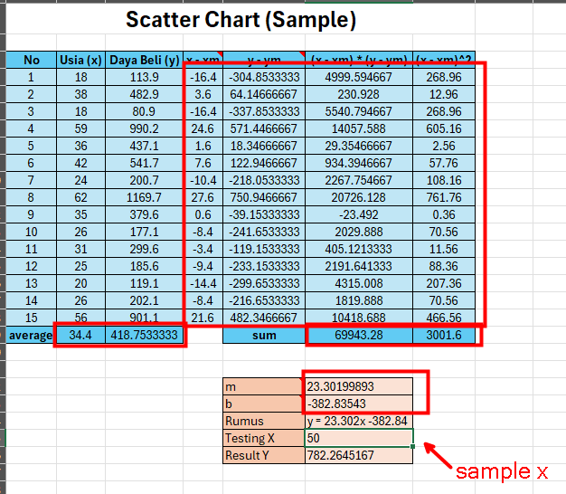

Visualisasi Linear Regression (Simple)
Untuk demonstrasi, gunakan template di file berikut: Template.xlsx
Menampilkan Linear Regression pada Grafik
Buatlah grafik scatter dari data yang ada. Lihat materi sesi 1: Data Visualization.
{kind=link}
Pilih grafik scatter yang telah dibuat, lalu klik tombol + (Chart Element), Trendline, lalu More Options
{kind=link}
Setelah itu, akan muncul suatu menu di sebelah kanan Excel. Pastikan kalian memilih Trendline Options lalu pastikan jenis regressionnya adalah “Linear” dan centang “Display Equation on chart” agar kita bisa melihat rumus regression.
Maka tampilan grafik akan seperti berikut:
{kind=link}
Menemukan koefisien dari Linear Regression dengan manual
Ingat rumus linear regression:
di mana:
\(y\) adalah variabel dependen
\(x\) adalah variabel independen
\(m\) adalah kemiringan garis (slope)
\(b\) adalah intercept (titik potong dengan sumbu y)
Di sini, kita perlu menentukan nilai \(m\) dan \(b\) dari data yang ada.
Berikut adalah cara mencari nilai \(m\) dan \(b\):
Hitung rata-rata dari kedua variabel (x dan y)
Hitung nilai \(m\) dengan rumus berikut:
\[m = \frac{\sum_{i=1}^{n} (x_i - \bar{x})(y_i - \bar{y})}{\sum_{i=1}^{n} (x_i - \bar{x})^2}\]
\(n\) adalah jumlah data
\(x_i\) adalah nilai x pada data ke-i
\(y_i\) adalah nilai y pada data ke-i
\(\bar{x}\) adalah rata-rata dari x
\(\bar{y}\) adalah rata-rata dari y
Hitung nilai \(b\) dengan rumus berikut:
\[b = \bar{y} - m\bar{x}\]
\(\bar{x}\) adalah rata-rata dari x
\(\bar{y}\) adalah rata-rata dari y
\(m\) adalah kemiringan garis (slope)
Setelah mendapatkan nilai \(m\) dan \(b\), kita bisa mendapatkan rumus linear regression. Kita bisa memasukkan nilai x untuk menemukan prediksi tingkat kebahagian berdasarkan usia.
Latihan
Selesaikan template di tab Manual Method dari file Template.xlsx.
Jika perhitungan sudah benar, maka hasilnya akan seperti berikut:
{kind=link}